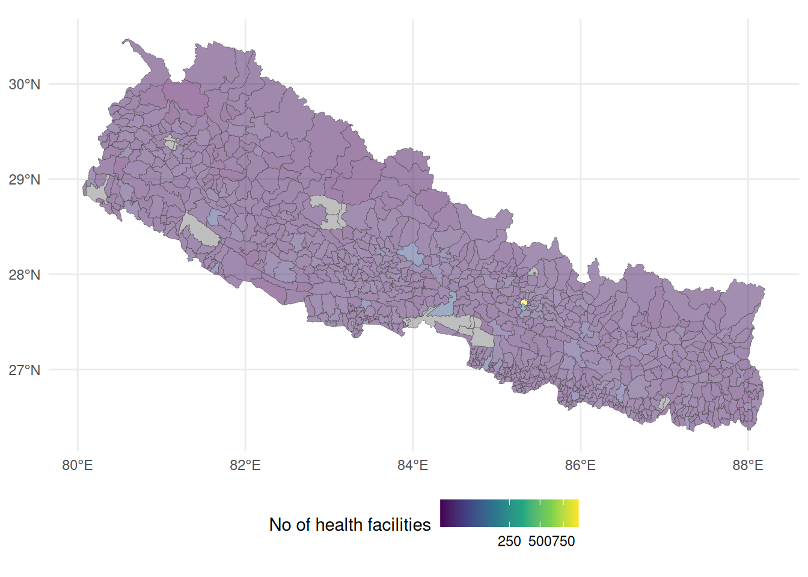
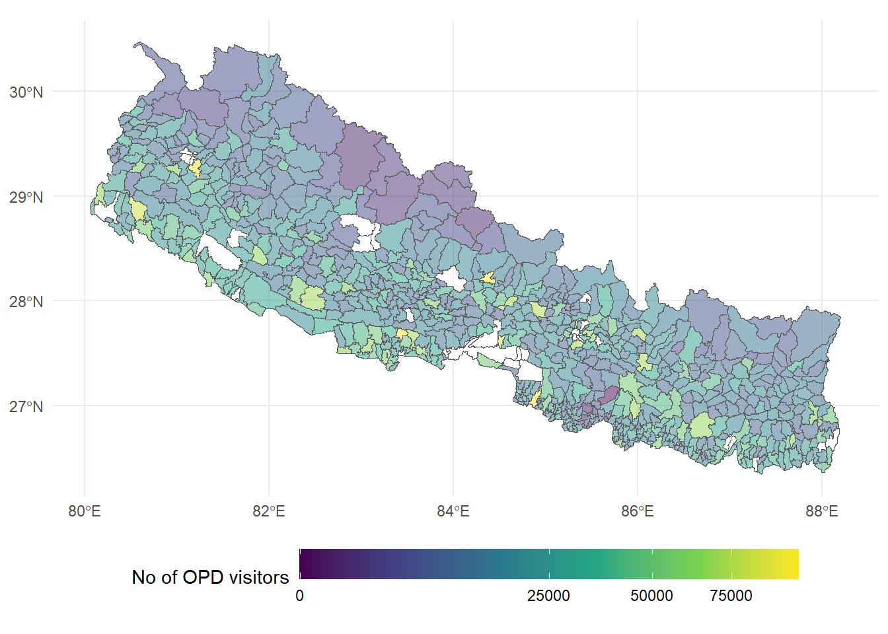
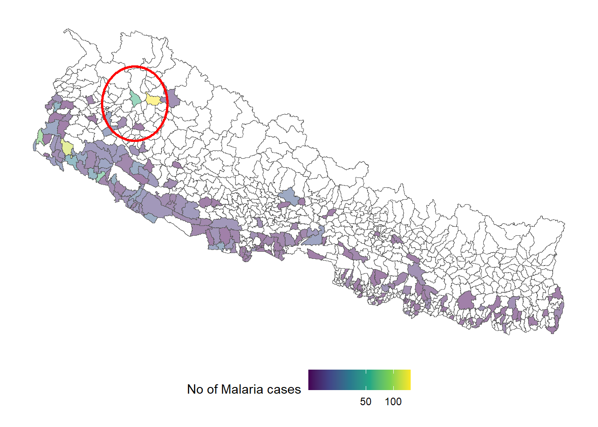
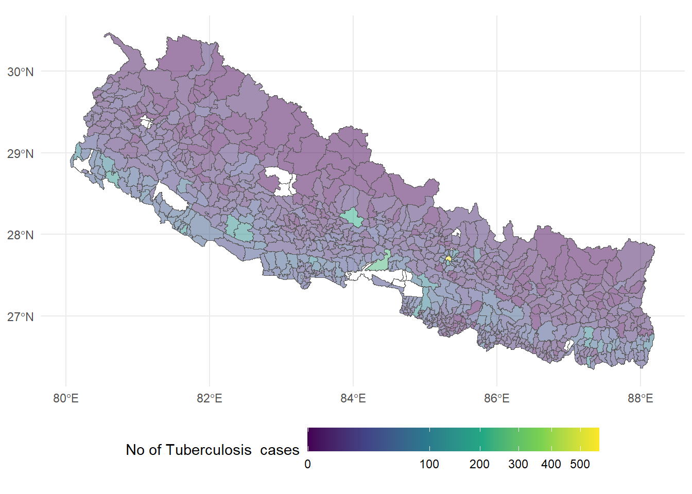
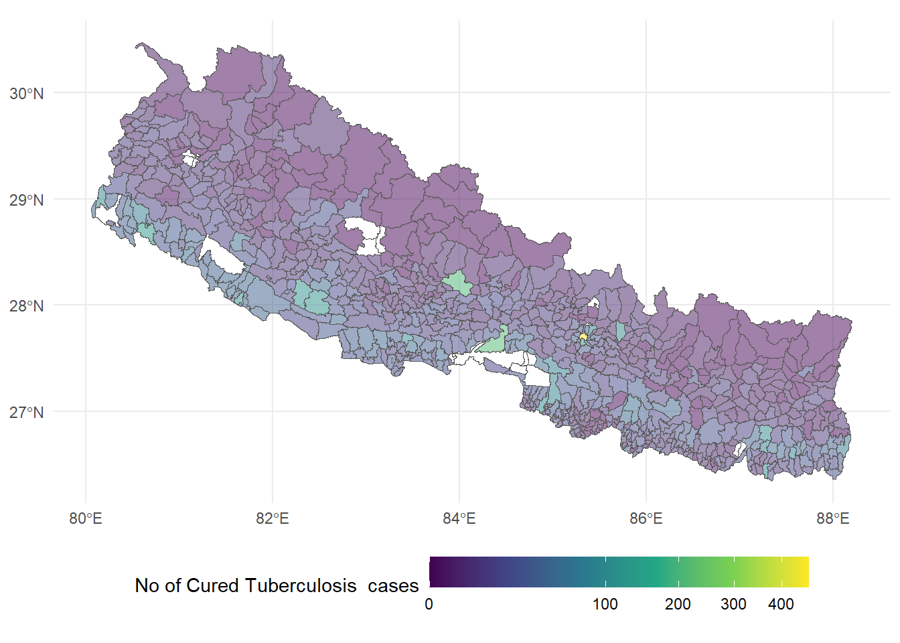

Loading the dataset
Health data: Count of various diseases
Health facilities data: Number of public and private health facilities in the local levels
These datasets can be downloaded from the
department of health services website(link broken now) for the year 2017/18 AD (2074/75 BS)Boundary of local levels: Geometry file (.shp) containing the boundary of local levels
The boundary data is downloaded from National geoportal of Nepal.
Number of health facilities
Total Outpatient Department (OPD) visitors
Showing local levels with OPD visitors less than 100,000 (16 local levels missing shown below in table)

The local levels with high number of OPD visitors are following 16 local levels which are mostly large cities (also related to presence of many health facilities):
| Local Level | District | Province | OPD visitors |
|---|---|---|---|
| Kathmandu Metropolitan City | KATHMANDU | Bagmati Province | 1235623 |
| Pokhara Lekhnath Metropolitan City | KASKI | Gandaki Province | 755738 |
| Biratnagar Metropolitan City | MORANG | Koshi Province | 655499 |
| Bharatpur Metropolitan City | CHITAWAN | Bagmati Province | 640677 |
| Siddharthanagar Municipality | RUPANDEHI | Lumbini Province | 273105 |
| Birtamod Municipality | JHAPA | Koshi Province | 267314 |
| Lalitpur Metropolitan City | LALITPUR | Bagmati Province | 251919 |
| Tansen Municipality | PALPA | Lumbini Province | 212971 |
| Mahalaxmi Municipality | LALITPUR | Bagmati Province | 200639 |
| Dhulikhel Municipality | KABHREPALANCHOK | Bagmati Province | 174107 |
| Madhyapur Thimi Municipality | BHAKTAPUR | Bagmati Province | 136121 |
| Birendranagar Municipality | SURKHET | Karnali Province | 132566 |
| Mechinagar Municipality | JHAPA | Koshi Province | 103168 |
| Gokarneshwor Municipality | KATHMANDU | Bagmati Province | 101135 |
| Bhaktapur Municipality | BHAKTAPUR | Bagmati Province | 100859 |
| Nepalganj Sub-Metropolitan City | BANKE | Lumbini Province | 100024 |
"Total.Diarrhoea.cases", "Fully.Immunized.Children" Infectious disease
Total number of Malaria cases

It is worth noting that, although malaria cases are primarily clustered in the southern regions (the plains of the Terai = hot and humid climate), there are notable exceptions where high case numbers are reported in the hilly and mountainous districts, particularly in the western region. Here is a list of several notable local levels that indicate a higher distribution of cases in the Western and Far Western regions.
| Local Level | District | Province | Malaria Total.number.of.positive.cases |
|---|---|---|---|
| Khatyad Rural Municipality | MUGU | Karnali Province | 139 |
| Godawari Municipality | KAILALI | Sudurpashchim Province | 119 |
| Bhimdatta Municipality | KANCHANPUR | Sudurpashchim Province | 81 |
| Tikapur Municipality | KAILALI | Sudurpashchim Province | 64 |
| Budhinanda Municipality | BAJURA | Sudurpashchim Province | 60 |
| Dhangadhi Sub-Metropolitan City | KAILALI | Sudurpashchim Province | 30 |
| Bhajani Municipality | KAILALI | Sudurpashchim Province | 25 |
| Melauli Municipality | BAITADI | Sudurpashchim Province | 25 |
| Thakurbaba Municipality | BARDIYA | Lumbini Province | 21 |
| Maharajganj Municipality | KAPILBASTU | Lumbini Province | 19 |
Total number of Tuberculosis cases

The cases of Tuberculosis are mostly clustered in bigger cities as listed below:
| Local Level | District | Province | New TB cases |
|---|---|---|---|
| Kathmandu Metropolitan City | KATHMANDU | Bagmati Province | 571 |
| Bharatpur Metropolitan City | CHITAWAN | Bagmati Province | 243 |
| Pokhara Lekhnath Metropolitan City | KASKI | Gandaki Province | 208 |
| Dhangadhi Sub-Metropolitan City | KAILALI | Sudurpashchim Province | 142 |
| Lalitpur Metropolitan City | LALITPUR | Bagmati Province | 140 |
| Nepalganj Sub-Metropolitan City | BANKE | Lumbini Province | 138 |
| Ghorahi Sub-Metropolitan City | DANG | Lumbini Province | 135 |
| Tulsipur Sub-Metropolitan City | DANG | Lumbini Province | 129 |
| Birgunj Metropolitan City | PARSA | Madhesh Province | 122 |
| Dharan Sub-Metropolitan City | SUNSARI | Koshi Province | 111 |
| Butwal Sub-Metropolitan City | RUPANDEHI | Lumbini Province | 108 |
| Madhyapur Thimi Municipality | BHAKTAPUR | Bagmati Province | 105 |
| Hetauda Sub-Metropolitan City | MAKAWANPUR | Bagmati Province | 103 |
| Biratnagar Metropolitan City | MORANG | Koshi Province | 101 |
| Bhimdatta Municipality | KANCHANPUR | Sudurpashchim Province | 101 |
| Itahari Sub-Metropolitan City | SUNSARI | Koshi Province | 100 |
| Jitpur Simara Sub-Metropolitan City | BARA | Madhesh Province | 96 |
| Godawari Municipality | KAILALI | Sudurpashchim Province | 91 |
| Gokarneshwor Municipality | KATHMANDU | Bagmati Province | 85 |
| Mechinagar Municipality | JHAPA | Koshi Province | 77 |
Here we look at the historical TB patient’s information in the number of cured TB cases

| Local Level | District | Province | Cured TB cases |
|---|---|---|---|
| Kathmandu Metropolitan City | KATHMANDU | Bagmati Province | 463 |
| Bharatpur Metropolitan City | CHITAWAN | Bagmati Province | 213 |
| Pokhara Lekhnath Metropolitan City | KASKI | Gandaki Province | 202 |
| Dhangadhi Sub-Metropolitan City | KAILALI | Sudurpashchim Province | 129 |
| Lalitpur Metropolitan City | LALITPUR | Bagmati Province | 127 |
| Tulsipur Sub-Metropolitan City | DANG | Lumbini Province | 119 |
| Ghorahi Sub-Metropolitan City | DANG | Lumbini Province | 111 |
| Nepalganj Sub-Metropolitan City | BANKE | Lumbini Province | 110 |
| Dharan Sub-Metropolitan City | SUNSARI | Koshi Province | 99 |
| Choutara Sangachowkgadhi Municipality | SINDHUPALCHOK | Bagmati Province | 99 |
| Butwal Sub-Metropolitan City | RUPANDEHI | Lumbini Province | 96 |
| Madhyapur Thimi Municipality | BHAKTAPUR | Bagmati Province | 96 |
| Birgunj Metropolitan City | PARSA | Madhesh Province | 95 |
| Biratnagar Metropolitan City | MORANG | Koshi Province | 93 |
| Bhimdatta Municipality | KANCHANPUR | Sudurpashchim Province | 92 |
| Jitpur Simara Sub-Metropolitan City | BARA | Madhesh Province | 88 |
| Pathari Shanishchare Municipality | MORANG | Koshi Province | 82 |
| Itahari Sub-Metropolitan City | SUNSARI | Koshi Province | 80 |
| Hetauda Sub-Metropolitan City | MAKAWANPUR | Bagmati Province | 75 |
| Godawari Municipality | KAILALI | Sudurpashchim Province | 74 |